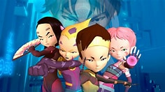
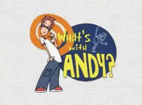
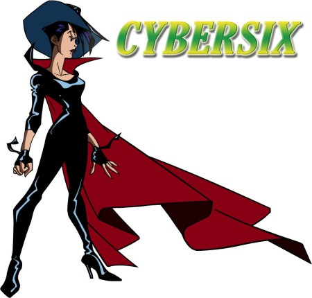
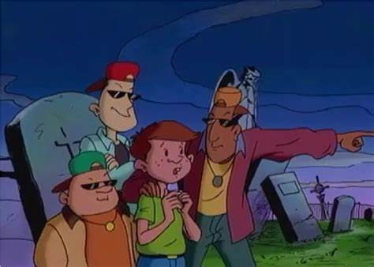

Some of the best cartoons you should remember
As we grow up, we tend to forget things that we remember from our early childhood, but I still remember some of the shows that could never leave my mind when I was a child. As far as I know, some grown ups would still remember the childhood cartoon shows as they are fun and interesting to watch all over again, while other times they would forget the show for being obscuritly bizzare and straight up weird. Here are the top 5 cartoons you probably never heard of.
5. Sonic Underground

As wild as this show is weird, Sonic Undergorund is surprisingly an action musical comedy starring the iconic blue hedgehog, Sonic as well and his hedgehog siblings, Manic and Sonia. What makes this cartoon different is that Sonic and his siblings can summon rock n' roll instrumants from their crystal medallions as weapons or for a musical break. The show did not gained enough attention as it lasted with fourty one episodes and ended with a whimper with the series incompleted.
4. Code Lyoko
Released in 2003 in France and later aired internationally from Canada to America, Code Lyoko tells a story of three Kadic Academy students, Jeremy, Ulric, Odd, and Yumi, as they enter the digital world of Lyoko with the guided support of Aelita to prevent a catastrophic event within the real world caused by a virus known as XANA. What makes this cartoon interesting to watch is that it shifts into 2D animation when the characters are in the real world and shifts into 3D CGI animation when entering the digital world. Surprisingly, Code Lyoko gained notoriety that toys where being made and possible fanart were being made in honor of the show. In fact, the show gained popularity that two games were developed, one of which is entitled, "Code Lyoko: Quest for Infinity."
3. What's with Andy?
As far as it lasted for three seasons, the show stars Andy Larkin, a mischivious high school prankster who has a bad habit of annoying the townsfolk of East Gackle with his childish antics. Aired internationally from Canada to America and to France, the show surprisingly recieved high ratings throught every country as it was very fun to watch our favorite class clown doing what he does best, pranking anyone he meets with his fun loving antics.
2. Cybersix
Gritty and bizzare to watch, Cybersix is Japanese-Canadian international series based on an Argentine comic strip series of the same name. Oddly enough, the comic strip showed more explicit nudity in comic than the cartoon as it is meant to also target a youner audience.
| Cartoon | Crashbox | The Cleveland Show | 6Teen | Darkwing Duck |
|---|---|---|---|---|
| Year | 1990-2000 | 2009-2013 | 2004-2010 | 1991-1992 |
| Description | A children education brainteaser show where young viewers can solve rebus puzzles in a game of Ten 2nds, spot three lies and a truth with Detective Verity in Mugshots, solve questions without being distracted in Distraction News with Dora Smarmy, and much more to see how smart they are. | After leaving Quoahog, Cleveland Brown moves in and lives with his family while going through the situations he faced. Despite having a cult classic, THe Cleveland Show slowly lost its grace and charm it ounce had. | Life of a teenager may be rough but six friends, Jude, Nikki, Jen, Caitlin, Jonsey, Wyatt, and Caitlin learn the challenges and personal values that being a teen and growing up can be pretty radical. This coming of age cartoon, surprisingly from Canada, has become a cult classic and gained international attention from both young and old viewers. | The terror that flaps in the night and a legend in his own right, DW protects the city of St. Canard with the help of Launchpad McQuack and his daughter Gosalyn taking down his rouges gallery of crazy villains such as his evil counterpart Negaduck, the secret villainous society F.O.W.L., and much more wild evildoers who will try to take over the city. Somehow in some way, the show has become a cult classic and a five time Daytime Emmy Nominated show as well as an Annie Award wining show for having the best voice actor Jim Cummings, the man who voiced as DW. |
1. Freaky Stories
If you want to hear something freaky, you have come to watch this bizzare animated show that has also been seen internationally. Freaky Stories is a dark comedy animated anthology hosted by two puppet bugs residing in Ted's Diner, Larry de Bug and Maurice the Maggot. Each story opens up with the narrator with the phrase, "This is a true story, it happened to a friend of a friend of mine." signifying that it aleegedly happened to a certain friend of the narrator albeit to be just a fictional story, or it actually happened. Yet another Canadian cartoon show that aired internationally, this series is downright bizzare and slightly creepy to get through every episode. Ironically, some episodes contained urban legends that are either the works of fiction or has actually happened in real life. For example, in the season 1 episode entitled, "Law and Disorder" the fourth story called "The Hook" is based on an urban legend that happened to a friend of a friend of the narrator.
Conclusion
For those who have noticed the following three entries on the list are actually Canadian based cartoons, well it jjust goes to show that Canadian cartoons is what we have been watching since the year 2000. Either way, we still rediscover timeless classics that are being overlooked for being bizzare in either a good or bad way.